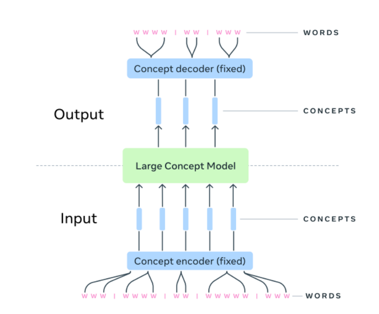

The Future of AI: Exploring the Potential of Large Concept Models
Dec 2024This project investigates the limitations of traditional Large Language Models and introduces Large Concept Models (LCMs) as an emerging paradigm for advanced AI reasoning. It highlights abstraction challenges and demonstrates how concept-level representations improve semantic reasoning and contextual understanding across domains.
View Project